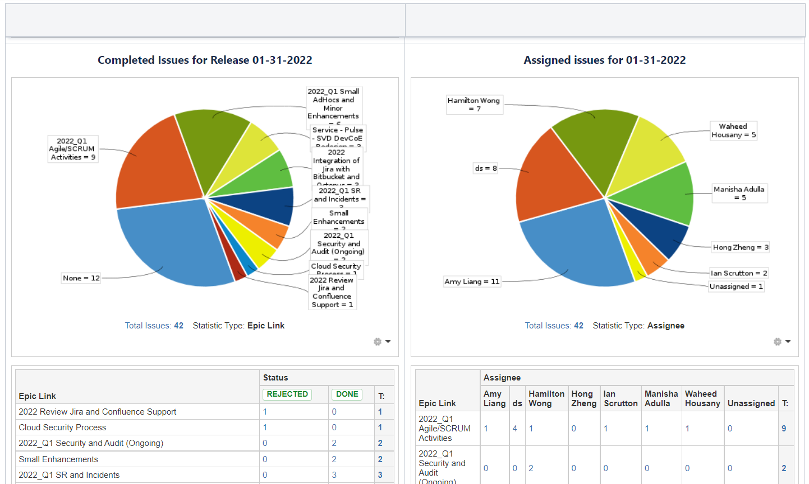
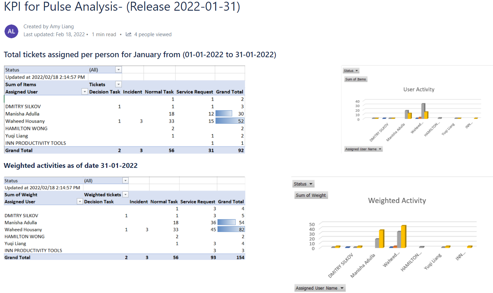

Projects & Portfolio
Estimated Time Application
This program was created as a stand-alone application to calculate estimated time for epics in Jira Software projects and was presented on February 17, 2022.import groovy.json.JsonSlurper
import groovy.json.JsonOutput
String project = "" // change to project key
String auth = "" // change to authentication string
String url = "" // change to root/domain string
String inUrl = "${url}search?jql=project=${project}"
def inConnection = inUrl.toURL().openConnection()
inConnection.addRequestProperty("Authorization", "Basic ${auth}")
inConnection.addRequestProperty("Accept", "application/json")
inConnection.addRequestProperty("Content-Type", "application/json")
inConnection.setRequestMethod("GET")
inConnection.doInput = true
inConnection.doOutput = false
inConnection.connect()
JsonSlurper json = new JsonSlurper()
def projMap = json.parseText(inConnection.content.text)
def epicMap = [:]
for (issue in projMap.issues) {
def epic = issue.fields.customfield // change customfield to Epic Link field ID
def effort = issue.fields.customfield // change customfield to Effort field ID
print issue.key + "\t" + effort + "\t" + epic
if (epic != null && effort != null) {
if (epicMap.containsKey(epic) == false) {
epicMap[epic] = effort
} else {
epicMap[epic] += effort
}
}
println "\t" + epicMap
}
epicMap.each{
epic, time ->
String outUrl = "${url}issue/${epic}"
def outConnection = outUrl.toURL().openConnection()
outConnection.addRequestProperty("Authorization", "Basic ${auth}")
outConnection.addRequestProperty("Accept", "application/json")
outConnection.addRequestProperty("Content-Type", "application/json")
outConnection.setRequestMethod("PUT")
outConnection.doInput = true
outConnection.doOutput = true
String update = """
{
"fields" : {
"customfield" : ${time}
}
}""" // change customfield to Estimated Time field ID
outConnection.outputStream.withWriter{
t.write(update)
it.flush()
}
outConnection.connect()
try {
outConnection.content.text
} catch (IOException e) {
try {
((HttpURLConnection)outConnection).errorStream.text
} catch (Exception ignored) {
throw e
}
}
}
During my Innovapost work term, it was decided from the first goal planning meeting that I would be showcasing the research and knowledge gained during the first month of work by creating a small program. Calculating the estimated time for an epic was a useful endeavour that tied all the topics and that no one had yet created anything for, so the task was assigned to me.
Working independently as a DevOps engineer co-op student, I created an application that could be run from command line using Groovy and the Jira REST API. Using the “GET” request method from the URLConnection class, I requested JSON content to parse using JsonSlurper into a map. The map was then iterated through, and the estimated times for each story within the epic were added together and sent back to update the proper field in the parent epic using the “PUT” method. The final application was presented to the team during one of the daily stand-up meetings, and no flaws were picked out.
Through the process of creating the Estimated Time application, I learned about REST APIs, how to connect to URLs with an application, the Groovy language and how it ties to Java. Groovy and Jira Cloud REST API documentation, sample code in GitHub repositories and confused forum posters were all helpful in my journey to complete the estimated time application. I believe if I had the chance to recreate the artifact, I might remove some redundant code and clean up the formatting, but overall, it would not change all that much.
Jira KPI Report
This KPI report detailing the team’s Jira activities was generated for the month of January on February 2, 2022. Before starting my work as a DevOps engineer, my understanding of agile approaches to software development was fairly shallow. At most, I could list the points on couple slides from my Software Design course and speak of the one time I implemented Scrum in a group project. At Innovapost, one of my early goals was to integrate myself into the agile process that the DevOps teams had already put into effect and re-introduce myself to the Scrum framework.
The agile workflow of the team I was allocated to relied heavily on Jira Software and the Kanban or Scrum features that could be applied to each project. Taking part and facilitating the daily stand-up meetings was part of the process, but the stories and Kanban board on the Jira interface gave me a concrete visual display of my progress in learning agile methodology. The Jira KPI report was a step beyond that, where a snapshot of the team’s advancement was caught and preserved.
The report itself was created as a page in the team Confluence space, using JQL search filters and Confluence macros such as pie charts and graphs. The format followed all the KPI reports prior to January, so there was little challenge or trouble there. Each section listed a different statistic to note and review at the end of the month, and outliers were taken into consideration to be adjusted the next month.
By constructing the Jira KPI report, I was able to familiarize myself with Jira advanced search and Confluence macros, as well as understand the data useful to the team for planning and review purposes.
PULSE KPI Report
This KPI report detailing the team’s PULSE activities was generated for the month of January on February 18, 2022. The greatest portion of my tasks during my time as a DevOps engineer consisted of Jira and Confluence administration and support due to the nature of my team. Employees working at Innovapost, Purolator and other Canada Post companies sent service requests through the PULSE ticketing system, and the requests were then assigned to teams within the organization and allotted to a specific member. Service requests assigned to the Productivity Tools team usually consisted of tasks like adding custom fields to issues, creating Jira projects or checking employee departures. Similar to the monthly Jira KPI report, the PULSE KPI report was a way of showcasing each member’s ticket completion at the end of the month.
The first half of creating the January PULSE KPI report went without mistakes. The instructions for adding a new column profile and generating an event search for the KPI in PULSE were clear and straightforward, and I completed the tasks in less than an hour. It was only when it came to exporting the information and inputting it into the Excel spreadsheet that errors started occurring.
For a reason not yet known then, the Excel VBA code could not work on my machine. At first, I assumed it was an issue with the Excel application itself and upgraded it to Microsoft 360. When it continued to fail, a Teams meeting was scheduled and the team member who created the code used the remote control feature to debug it. By then, the KPI report had already been pushed to mid-February, but the problem was finally solved and the task could be concluded.
While producing the PULSE KPI report might have consisted mainly of confusion over the Excel script, the activity did allow me a glimpse into how VBA code in Excel functioned and the specifics of creating a PULSE event search.